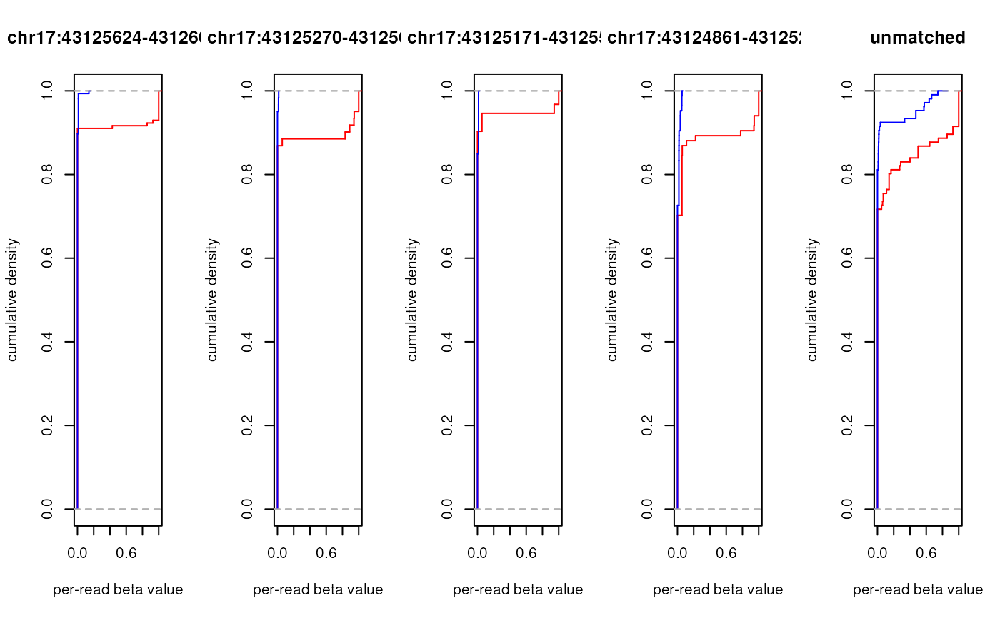

This function computes empirical cumulative distribution functions (eCDF) for per-read beta values of the sequencing reads.
BAM file location string OR preprocessed output of
preprocessBam function. BAM file alignment records
must contain XG tag (strand information for the reference genome) and
methylation call string (XM tag). Read more about these and other
requirements and BAM preprocessing at preprocessBam.
Browser Extensible Data (BED) file location string OR object of
class GRanges holding genomic coordinates for
regions of interest. It is used to match sequencing reads to the genomic
regions prior to eCDF computation. The style of seqlevels of BED file/object
must match the style of seqlevels of the BAM file/object used.
character string for the type of assay that was used to produce sequencing reads:
"amplicon" (the default) -- used for amplicon-based next-generation
sequencing when exact coordinates of sequenced fragments are known.
Matching of reads to genomic ranges are then performed by the read's start
or end positions, either of which should be no further than
`match.tolerance` bases away from the start or end position of genomic
ranges given in BED file/GRanges object
"capture" -- used for capture-based next-generation sequencing when
reads partially overlap with the capture target regions. Read is considered
to match the genomic range when their overlap is more or equal to
`match.min.overlap`. If read matches two or more BED genomic regions, only
the first match is taken (input GRanges are
not sorted internally)
integer vector specifying what `bed` regions should be included in the output. If `c(1)` (the default), then function returns eCDFs for the first region of `bed`, if NULL - eCDF functions for all `bed` genomic regions as well as for the reads that didn't match any of the regions (last element of the return value; only if there are such reads).
boolean defining if BED coordinates are zero based (default: FALSE).
integer for the largest difference between read's and
BED GRanges start or end positions during
matching of amplicon-based NGS reads (default: 1).
integer for the smallest overlap between read's and
BED GRanges start or end positions during
matching of capture-based NGS reads (default: 1). If read matches two or more
BED genomic regions, only the first match is taken (input
GRanges are not sorted internally).
string defining cytosine methylation context used for computing within-the-context and out-of-context eCDFs:
"CG" (the default) -- within-the-context: CpG cytosines (called as zZ), out-of-context: all the other cytosines (hHxX)
"CHG" -- within-the-context: CHG cytosines (xX), out-of-context: hHzZ
"CHH" -- within-the-context: CHH cytosines (hH), out-of-context: xXzZ
"CxG" -- within-the-context: CG and CHG cytosines (zZxX), out-of-context: CHH cytosines (hH)
"CX" -- all cytosines are considered within-the-context
other parameters to pass to the
preprocessBam function.
Options have no effect if preprocessed BAM data was supplied as an input.
boolean to report progress and timings (default: TRUE).
list with a number of elements equal to the length of `bed.rows` (if not NULL), or to the number of genomic regions within `bed` (if `bed.rows==NULL`) plus one item for all reads not matching `bed` genomic regions (if any). Every list item is a list on it's own, consisting of two eCDF functions for within- and out-of-context per-read beta values.
The function matches reads (for paired-end sequencing alignment files - read
pairs as a single entity) to the genomic
regions provided in a BED file/GRanges object, computes
average per-read beta values according to the cytosine context parameter
`ecdf.context`, and returns a list of eCDFs for within- and out-of-context
average per-read beta values, which can be used for plotting.
The resulting eCDFs and their plots can be used to characterise the methylation pattern of a particular genomic region, e.g. if reads that match to that region are methylated in an "all-CpGs-or-none" manner or if some intermediate methylation levels are more frequent.
preprocessBam for preloading BAM data,
generateCytosineReport for methylation statistics at the level
of individual cytosines, generateBedReport for genomic
region-based statistics, generateVcfReport for evaluating
epiallele-SNV associations, extractPatterns for exploring
methylation patterns, and `epialleleR` vignettes for the description of
usage and sample data.
# amplicon data
amplicon.bam <- system.file("extdata", "amplicon010meth.bam",
package="epialleleR")
amplicon.bed <- system.file("extdata", "amplicon.bed",
package="epialleleR")
# let's compute eCDF
amplicon.ecdfs <- generateBedEcdf(bam=amplicon.bam, bed=amplicon.bed,
bed.rows=NULL)
#> Reading BED file
#> [0.025s]
#> Checking BAM file:
#> paired-end, name-sorted alignment detected
#> Reading paired-end BAM file
#> [0.004s]
#> Computing ECDFs for within- and out-of-context per-read beta values
#> [0.028s]
# there are 5 items in amplicon.ecdfs, let's plot them all
par(mfrow=c(1,length(amplicon.ecdfs)))
# cycle through items
for (x in 1:length(amplicon.ecdfs)) {
# four of them have names corresponding to amplicon.bed genomic regions,
# fifth - NA for all the reads that don't match to any of those regions
main <- if (is.na(names(amplicon.ecdfs[x]))) "unmatched"
else names(amplicon.ecdfs[x])
# plotting eCDF for within-the-context per-read beta values (in red)
plot(amplicon.ecdfs[[x]]$context, col="red", verticals=TRUE,
do.points=FALSE, xlim=c(0,1), xlab="per-read beta value",
ylab="cumulative density", main=main)
# adding eCDF for out-of-context per-read beta values (in blue)
plot(amplicon.ecdfs[[x]]$out.of.context, add=TRUE, col="blue",
verticals=TRUE, do.points=FALSE)
}

# recover default plotting parameters
par(mfrow=c(1,1))